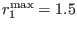
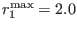
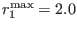
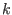
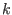

Next: Bibliography Up: Biogeochemical scenarios Previous: Fladenground Experiment - #Fashametal1990### Contents
The Gotland Deep scenario (Central Baltic Sea) which has been described
in section 12.2.5 has been used for
demonstrating the implementation of the Neumann et al. (2002)
biogeochemical model into GOTM, see Burchard et al. (2006).
For the description of the implementation into GOTM,
see section  .
.
Some adaptations to the Neumann et al. (2002) had to be made,
in order to provide acceptable results for the
ecosystem simulations in the Gotland Deep. The
the maximum growth rate of diatoms from
a value of
 d to
 d
to
 d .
This is due to the fact that the simple turbulence closure scheme
(Pacanowsci and Philander (1981))
used by Neumann et al. (2002) mixed substantially less than the
-
used here.
The surface
fluxes of nutrients have been calibrated in such a way that
winter nutrient concentrations are close to observations.
By doing do, the effect of lateral nutrient transport is
parameterised.
.
This is due to the fact that the simple turbulence closure scheme
(Pacanowsci and Philander (1981))
used by Neumann et al. (2002) mixed substantially less than the
-
used here.
The surface
fluxes of nutrients have been calibrated in such a way that
winter nutrient concentrations are close to observations.
By doing do, the effect of lateral nutrient transport is
parameterised.
For further details, see Burchard et al. (2006).